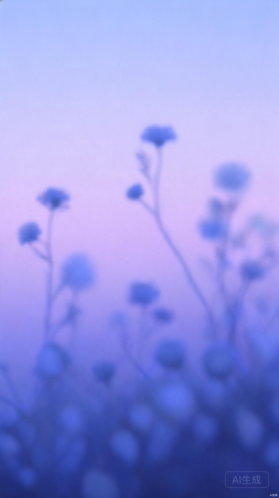
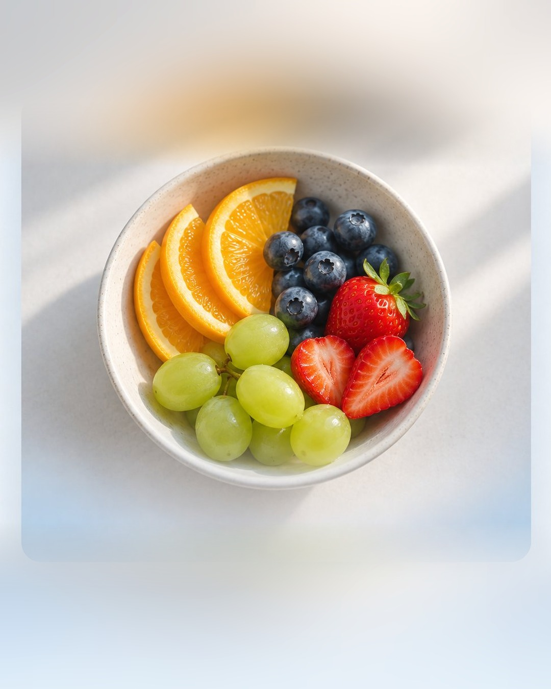
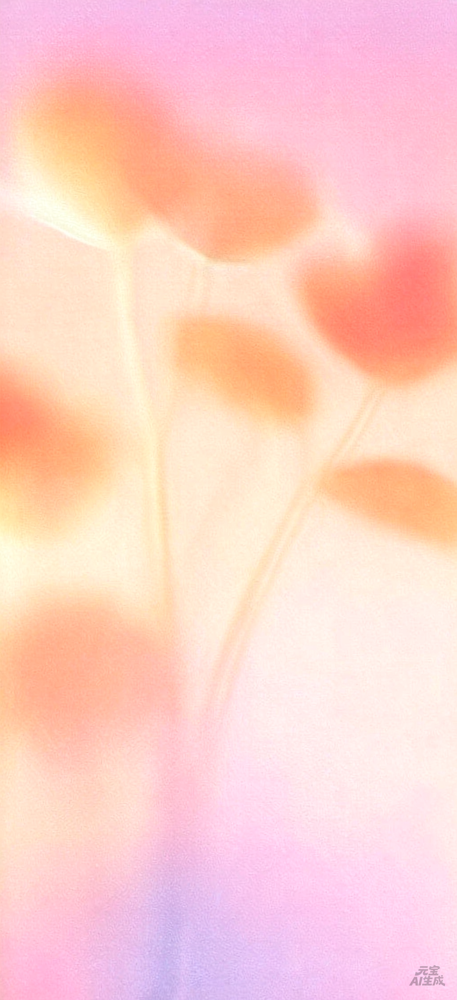

G 版里唯一不讨喜的是卡片缩得太小。这版把中间工具卡恢复到原先大小（约内容宽 92%、4:5 比例、两侧邻卡缩 0.86 只露一个圆角——和现在 App 里完全一致），只保留另外两处精简：



卡片尺寸：中间工具卡从 G 版的 172px 恢复到原尺寸（约 307px 屏宽下 / 内容宽 92%），4:5 比例不变，图片完整铺满不裁切；两侧邻卡仍缩 0.86 露出一个圆角，滑动感保留。
其余同 G：顶部 tab 行删除；收藏建议竖排列表（小图 + 标题 + 确认有帮助 N 次 · 证据 + 最近一次 + 再做一次药丸）；「共 N 条 ›」进全部清单。
+ 大卡的视觉冲击力回来了；tab 噪音和横滑收藏两个槽点已清
− 大卡 + 竖排收藏同屏时，收藏区只露得到 2 条左右，需轻滚一下看第 3 条